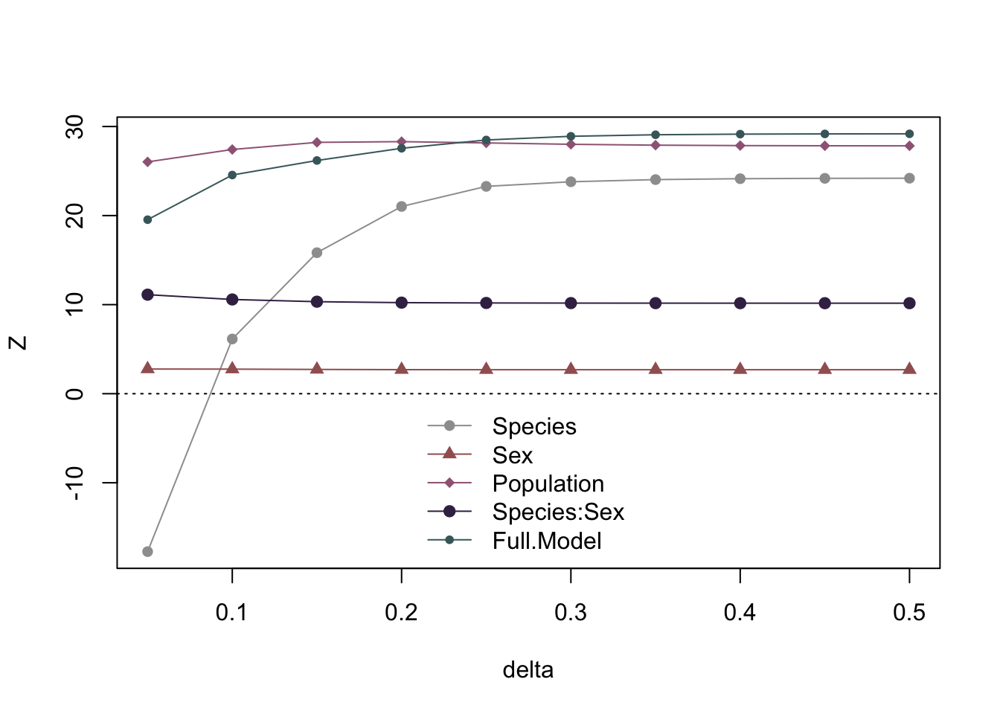

library(geomorph)
data(pupfish.ws)
fit <- extended.pgls(
f1 = coords~Species * Sex + Population,
data = pupfish.ws,
species = "Species",
phy = pupfish.ws$phy,
delta = 0.1,
print.progress = FALSE)
LRT <- lr_test(fit, print.progress = FALSE)
LRTWhat is extended PGLS?
Phylogenetic generalized least squares (PGLS) might invoke varied impressions for what is involved but it is really simple in concept. Least squares is a process of parameter estimation, which minimizes the sum of squared (vector lengths of) residuals. This is often revealed with the equation:
\[ \mathbf{B} = \left(\mathbf{X}^T\mathbf{X}\right)^{-1}\left(\mathbf{X}^T\mathbf{Y}\right), \] for the estimation of coefficients, \(\mathbf{B}\), given some model, \(\mathbf{X}\), and data, \(\mathbf{Y}\). One might think the equation looks a lot like a matrix form of this:
\[ b = \frac{\sum xy}{\sum x^2}, \] which if \(x\) and \(y\) were mean-centered is the definition of a slope.
Generalized least-squares (GLS) recognizes that \(x\) and \(y\) are maybe not appropriate, as is. If we transformed \(x\) and \(y\) in some way, i.e., \(\tilde x = f(x)\), and \(\tilde y = f(y)\), then we would have:
\[ b = \frac{\sum \tilde x \tilde y}{\sum \tilde x^2}. \]
Pretty simple, right? So, in matrix form, this concept is:
\[ \mathbf{B} = \left(\mathbf{\tilde X}^T\mathbf{\tilde X}\right)^{-1}\left(\mathbf{\tilde X}^T\mathbf{\tilde Y}\right), \] What makes P-GLS a specific GLS method is that the transformation is based on expected phylogenetic relatedness (non-independence) from a Brownian motion (BM) model of evolutionary divergence; i.e., species more closely related should have more similar traits.
The transformation that makes the equation above is found thusly:
\[ \boldsymbol{\Omega}^{-1} = \left(\boldsymbol{\Lambda\Lambda}^T\right), \] where \(\boldsymbol{\Omega}\) is the phylogenetic covariance matrix from a BM model of evolutionary divergence. \(\boldsymbol{\Lambda}\) is the square-root matrix of the inverse of \(\boldsymbol{\Omega}\). Transformations are made as: \[ \mathbf{\tilde X} = \boldsymbol{\Lambda}\mathbf{X}, \]
\[ \mathbf{\tilde Y} = \boldsymbol{\Lambda}\mathbf{Y}. \] these transformed matrices are used to estimate \(\mathbf{B}\).
What does the “extended” part of extended-PGLS mean?
\(\boldsymbol{\Omega}\) above is \(N \times N\) for \(N\) species. If we have \(n\) observations, where \(n > N\) becasue we sampeld more individuals than 1 per species, we could extend \(\boldsymbol{\Omega}\) via:
\[ \boldsymbol{\Omega}_E = \mathbf{X}\boldsymbol{\Omega}\mathbf{X}^T, \]
where \(\mathbf{X}\) is a model matrix with dummy variable to indicate to which species each observation belongs. \(\boldsymbol{\Omega}_E\) is an \(n \times n\) matrix that extends inter-species covariances to inter-individual locations in the larger matrix.
But this is problematic!
Such a matrix is singular and will not easily allow estimation of \(\mathbf{B}\). We can attempt to make it non-singular by further weighting covariances, to allow observations to be slightly more independent than we would expect based on species, because of inter-individual variation. Here is how we can do that:
\[ \boldsymbol{\Omega}_E = \mathbf{XW}\boldsymbol{\Omega}\mathbf{WX}^T . \] \(\mathbf{W}\) is a weight matrix (diagonal matrix) providing values to use to jointly multiply the products between \(\boldsymbol{\Omega}\) and \(\mathbf{X}\), to lessen their magnitude. The elements of \(\mathbf{W}\) are equal to:
\[ e^{-\delta\gamma} \] The parameter, \(\delta\) is an independence parameter. If 0, then the weights are 1, meaning the transformation is unweighted. Larger values push the weights toward 0, making covariance small, meaning a trend toward independece of observations. The parameter, \(\gamma\) is a sample size adjuster. If \(\gamma = 1\), sample size has no effect on weights. If based on sample size, then weights are decreased in proportion to the square-root of sample size, allowing larger samples to behave as if more independent.
In (Adams & Collyer, 2024), we used \(\delta = 0.10\) and \(\gamma\) adjusted for sample size. We did this to accommodate the ill-conditioned covariance matrix produced by using \(\delta \approx 0\). But let’s see what we could have learned by varying \(\delta\).
Varying \(\delta\) in the pupfish.ws example
Here is basically what we presented in (Adams & Collyer, 2024).
Wilks LR Z pval
Species 0.470155560 731.2960 6.143384 0.001
Sex 0.894646636 107.8752 2.760067 0.005
Population 0.022496534 3676.7635 27.420145 0.001
Species:Sex 0.420985377 838.3371 10.581099 0.001
Full.Model 0.005167624 5102.0980 24.553456 0.001What if we used different values of \(\delta\)?
deltas <- seq(0.05, 0.5, 0.05)This is a good point to go get a coffee or a beer, maybe a light meal, if doing this on a standard computer.
Result <- lapply(as.list(deltas), function(d){
fit <- extended.pgls(
f1 = coords~Species * Sex + Population,
data = pupfish.ws,
species = "Species",
phy = pupfish.ws$phy,
delta = d,
print.progress = FALSE)
LRT <- lr_test(fit, print.progress = FALSE)
LRT
})Now, let’s make a graph!
Z_scores <- t(sapply(Result, function(x) x$tab$Z))
colnames(Z_scores) <- rownames(LRT$tab)
plot(deltas, Z_scores[, 1], pch = 16,
col = "#9E9E9E", type = "o",
ylim = c(min(Z_scores), max(Z_scores)),
xlab = "delta", ylab = "Z")
abline(h = 0, lty = 3)
points(deltas, Z_scores[, 2],pch = 17,
col = "#A26060", type = "o")
points(deltas, Z_scores[, 3],pch = 18,
col = "#9F6785", type = "o")
points(deltas, Z_scores[, 4],pch = 19,
col = "#3E2C53", type = "o")
points(deltas, Z_scores[, 5],pch = 20,
col = "#46686B", type = "o")
legend("bottom",
rownames(LRT$tab),
lty = 1, pch = 16:20,
col = c("#9E9E9E","#A26060", "#9F6785",
"#3E2C53", "#46686B"),
bty = "n") 
What did we learn?
- Only
Speciesis largely affected by changing \(\delta\). This makes some sense, since covariances are based on species relatedness, and \(\delta\) augments these values at the individual level. - Small changes in effect sizes were apparent for non-species effects, only where \(\delta \approx 0\). Mostly this was the case for the full model, which contains
Species. - Otherwise, effects were consistent, irrespective of \(\delta\).
- All effects were stable at \(\delta \approx 0.25\)
Specieswas a significant effect at \(\delta = 0.1\)
How do we interpret this?
First, cautiously! Is \(\delta = 0.1\) small or large? Does the fact that Species behaves as if independent at \(\delta = 0.25\) suggest that even with a large amount of phylogenetic relevance (because \(e^{-0.25} = 0.78\), meaning this is not a large change from a weight of 1 ) the species effect is still large?
Second, because the Species effect is not as much interest as the Species:Sex effect in a study like this, does it matter? The effect size is consistent for the latter effect, regardless of \(\delta\).
If I were to report these results again, here is what I would do:
- Remove the
Specieseffect from the table. It is not helpful. - Report the trend for the
Specieseffect based on a range of \(\delta\), separate from the other effects in the table. - Speculate whether the low \(\delta\) value is consistent with an adaptive radiation. If a significant
Specieseffect is observed even if the linear model is rigged to account for it, it suggests species might diverge in shape more than expected from a BM model of divergence. - Focus interpretations on
Species:Sex. This is the point of the analysis, anyway, and it appears scaling weights to deal with the awkward non-species-effect that could arise has no influence on differences of within-species trends across species!
References
Adams, D. C., & Collyer, M. L. (2024). Extending phylogenetic regression models for comparing within-species patterns across the tree of life. Methods in Ecology and Evolution, 15(12), 2234–2246. doi:10.1111/2041-210X.14438